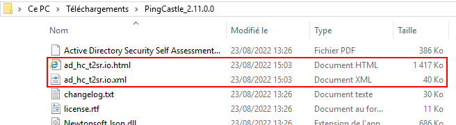

PingCastle
Objectif et environnement
Objectif
L’installation PingCastle pour auditer le serveur Active Directory.
Environnement
Matériels :
Dell PowerEdge r240 avec Proxmox 7.1-7
Adressage des VMS :
Réseaux : 172.16.0.0/16
Le logiciel PingCastle est installé directement sur la VM du l’Active Directory
Documentation
Processus
Téléchargement
Lien de téléchargement :
https://www.pingcastle.com/download/
J’ai téléchargé l’archive et je l’ai extrait.
Réalisation d’un audit AD
J’exécute l’application PingCastle.exe
Je me place sur le premier choix et j’appuie sur la touche Entrer
PingCastle a reconnu le domaine t2sr.io, j’appuie donc de nouveau sur Entrer car il s’agit du choix par défaut.

L’audit prend quelques secondes à s’effectuer, une fois fini j’appuie sur Entrer et PingCastle se ferme.
Deux fichiers ont été généré à la racine du dossier de PingCastle.

Lecture du rapport de l’audit AD
J’ouvre dans un navigateur le fichier ad_hc_t2sr.io.html
L’indicateur est élevé ce qui veux dire que l’AD n’est sécurisé comme il le devrait, cette note est normale étant donné que l’AD est proche d’une configuration par défaut, peut de sécurisation ont été fait dessus.
Attention !
Ce compteur correspond à la note la plus élevé sur 4 catégories, dans
notre cas il fait référence au compteur d’anomalies.

Grace au 4 compteur je peux situer les points de sécurité et les modifications à effectuer pour renforcer la sécurité générale de l’AD.
Stale Object : points de sécurité liés aux utilisateurs ou aux ordinateurs
Privileged Accounts : points de sécurité liés aux comptes avec des privilèges élevés (Administrateurs) du domaine Active Directory
Trusts : points de sécurité liés aux relations d’approbations entre les domaines Active Directory
Anomalies : points de sécurité liés à d’autres aspects de la configuration qui peuvent impacter la sécurité de votre annuaire
Juste en dessous des compteurs vient le tableau « Risk Model », il permet de cerner les configurations auquel il faut porter attention.
Ce qui est en blanc n’est pas dans la légende, cela veut dire :
Pas de problèmes tout est bon !
Ensuite vient les règles spécifiques catégories par catégories a modifié et à prendre en compte.
A savoir :
Lorsque l’on exécute un audit AD avec PingCastle l’audit précédent est écrasé !
Il faut penser à sauvegarder les anciens audits.
Planifier un audit régulier de l’AD avec PingCastle
J’ai créé un script PowerShell qui placé à la racine du Dossier de PingCastle permet de :
Créer un dossier « auditBkp » s’il n’existe pas
Exécuter un audit AD par le biais du PingCastle.exe
Transférer les deux fichier html et xml dans le dossier auditBkp et de les renommés en y ajoutant la date et l’heure lors de l’exécution de l’audit AD.
Le script :

\$BkpPath = ".\auditBkp"
**If**(!(Test-Path \$BkpPath)){
New-Item -ItemType Directory -Force -Path \$BkpPath
}
.\PingCastle.exe --server SRV-W19-AD.t2sr.io --healthcheck
\$SourceFileHtmlPath = ".\ad_hc_t2sr.io.html"
\$SourceFileXmlPath = ".\ad_hc_t2sr.io.xml"
\$DateNow = Get-Date -Format "ddMMyyyyHHmm"
\$FileHtml = "ad_hc_t2sr.io\_"+\$DateNow+".html"
\$FileXml = "ad_hc_t2sr.io\_"+\$DateNow+".xml"
Move-Item -Path \$SourceFileHtmlPath
-Destination.\auditBkp\\\$FileHtml
Move-Item -Path \$SourceFileXmlPath -Destination .\auditBkp\\\$FileXml
Ce script est propre au réseau sur lequel je travaille (il s’agit d’un script PowerShell : .ps1).
Pour m’aider j’ai consulté le « help » de PingCastle dans une invite de commande :
.\PingCastle.exe --help

Conclusion
PingCastle est un outil très intéressant pour auditer l’Active Directory avant de sa mise en production.